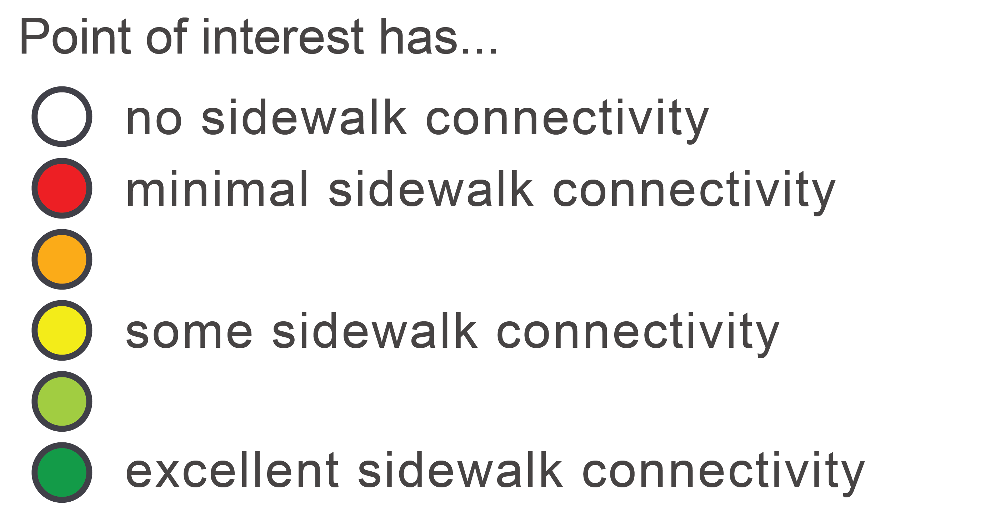
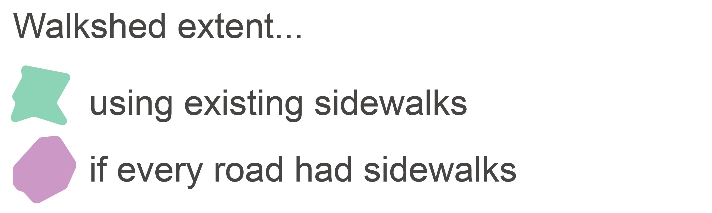
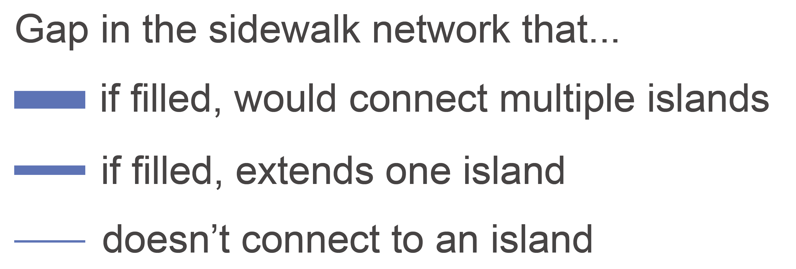
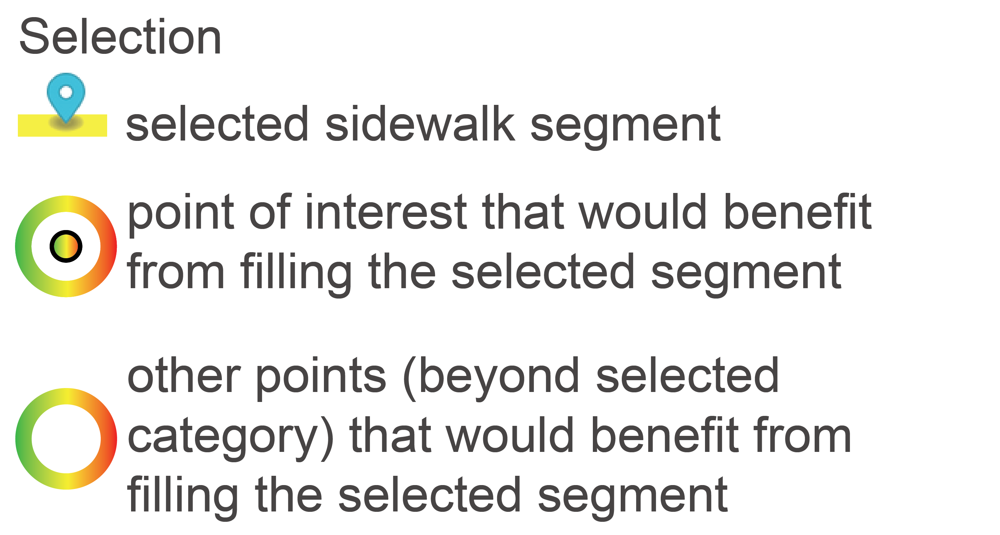
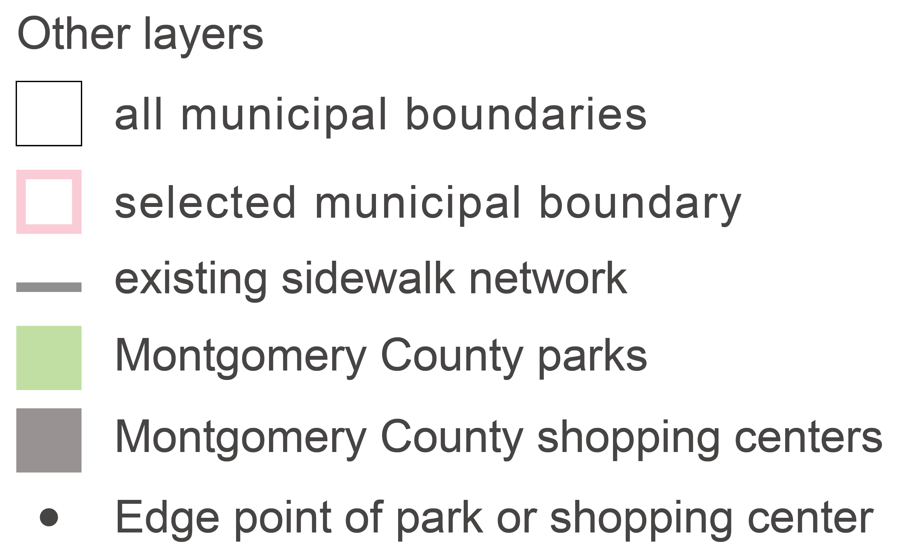

Sidewalk Priorities
All Points of Interest
Note: this map was designed to be used with a full-sized screen
Explore the map by:
selecting a municipality:
and/or
filtering the points:
You can also
click on a point
to learn more about pedestrian accessibility at that location
and
click on a blue gap line
to see all places that may have increased accessibility if the gap
were filled.
Filling this gap could:
- connect X existing sidewalk islands
-
improve pedestrian connectivity to
X
destinations
- X
- Y
Area of One-Mile Walkshed |
Placeholder percentage
|




